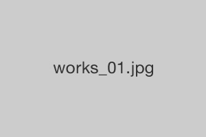
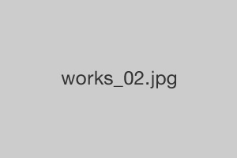

TAKEBASHI Seminar at MAINICHI University.

之前仍以商業用途為主的智慧型手機，如今已結合了音樂播放、遊樂器等功能，而且其充滿時尚感的操作介面，深深地打動了男女老幼每一個人的心。
我們一直在研究的是最熱門的智慧型手機。

在美國慢慢變得流行的電子書。
日本仍處於電子書的摸索階段，而閱讀器的介面也仍是五花八門的階段。
電子書的未來將進化成何種模樣呢。
這真是目前最值得研究的主題。
這幾年手機出現了許多令人目不睱給的進化。
從適合年輕人的手機，到兒童用手機、老年人手機，各種不同的機種如煙火一般出現而瞬間消失。
這個專案大膽地以非智慧型手機的手機為研究主題。